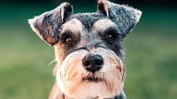

Mascotas disponibles para adopción :3

Botas
Edad: 2 años
Raza: Labrador
Botas era juguetón hasta que un carro le quitó ese brillo ;C.

Lucky
Edad: 8 años
Raza: Maltés
Un desmadre, pero un desmadre bonito :3.